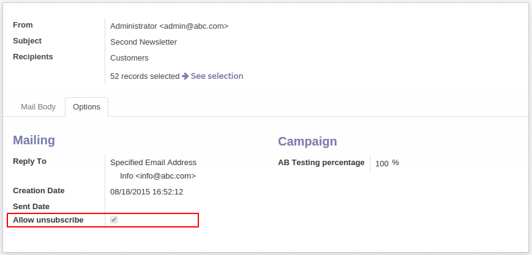

<section class="oe_container">
    <div class="oe_row">
        <h2 class="oe_slogan">Mass mailing unsubscribtion</h2>
        <h3 class="oe_slogan">Allow unsubscription when your Odoo is not connected to the internet</h3>

        <div class="oe_span12">
            <center><p class='oe_mt32'>
                Implement this model when you want to use the nice Odoo Mass mailing functionality and your Odoo is not accessible from the internet.
                This module removes the default unsubscribe link so you can add specific unsubscribe link for your mailing process.
            </p></center>
            <div class="oe_span12"><center>
                </center>
            </div>
        </div>

    </div>
</section>
